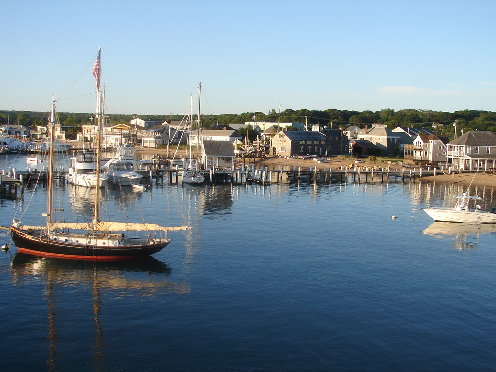

Martha’s Vineyard, MA
Charter boats, guest houses and seafood shacks rely on summer to carry winter.
High seasonSummer
Low seasonWinter

Built for the businesses whose busy season has to carry the months that follow.
Forecast 12 months aheadOpen an example, see the low months ahead, and test the next purchase. Rivertide does the financial work while you stay focused on the decision.
See how an October purchase affects your cash through March.
Upcoming commitments included in the forecast. These are additional to recurring monthly costs.
Explicit dated commitments from the same example used in the V0 app. No connected account data.
Test fuel savings against the example’s Projected Low; your baseline stays unchanged.
The reduction is capped at each month’s fuel estimate and the first month is prorated. It is a scenario, not a recommendation that this cost can be cut.
From summer destinations to winter towns, a strong month has to do more than pay this month’s bills.
Charter boats, guest houses and seafood shacks rely on summer to carry winter.
Ski shops, inns and sugarhouses rely on winter to carry the quieter mud season.
A purchase can fit today and leave a shortfall in the quiet months. See its impact before you commit.
Example: a $15,000 cash purchase. No financing or trade-in.Before the purchase
No finance degree required. Every important number stays explainable.
See each estimate and what is held back.
Protect the buffer when estimates are uncertain.
Rivertide doesn’t profit from users needing a loan.
Your financial data stays yours.
Martha’s Vineyard · Mad River Valley
Summer on the Vineyard, winter in the Valley: the rush ends, but rent, insurance and equipment payments continue.
Rivertide helps owners plan what the strong months need to carry, without a finance department.
The busy season should help pay for the months that follow.